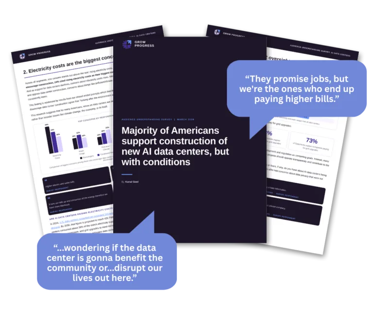
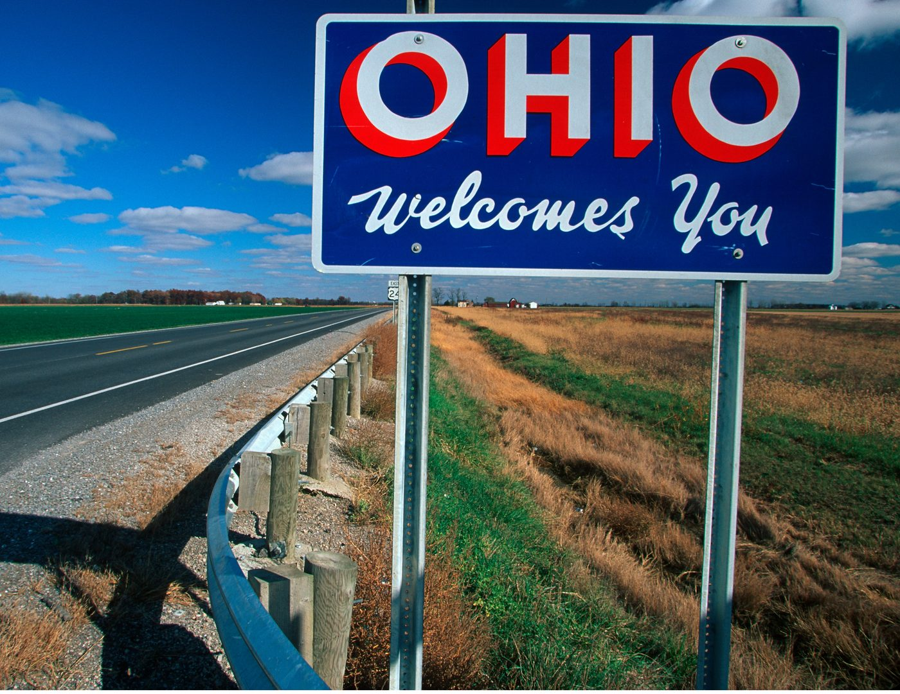
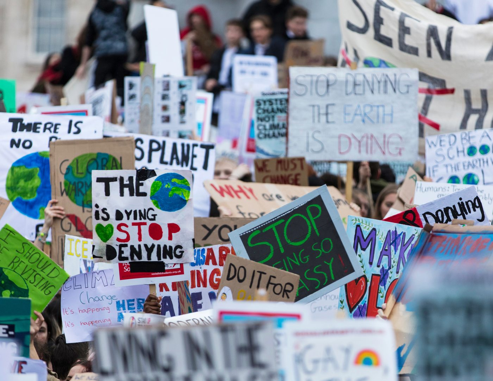

Research, case studies, and thinking from 500+ message tests across campaigns, unions, advocacy, and nonprofits.
WCK and Media Cause pre-tested video creative before launch — and discovered a Gaza message that drove +11 pts trust with 18–34 year olds, leading to $250K+ in donations at 4x+ ROAS.
A data-driven ad beat a narrative ad 3-to-1 on donation intent — but the narrative produced backlash among high-income donors. Here's what that means for your creative strategy.
Fazal's story drove +17 pts support for refugee protection — ranking in the 98th percentile of all tested messages. The anti-Trump framing caused a -13 pt backlash with moderates.
A local independent radio partnership helped mobilize voters around shared community values — and the results were measurable.

CLF's message testing revealed which climate frames resonate most with New England audiences — and which ones backfire.

Fast, credible audience research for moments when decisions can't wait for a full study cycle. Here's what Pulse Surveys are and when to use them.

Message testing identified the most persuasive contrast frames in competitive districts — and the results show up on Election Day.

The evidence is clear: contrast messaging consistently outperforms pure attack messaging. Here's what the research shows about why — and how to apply it.

A national audience study reveals what shapes public opinion on AI data center development — and what concerns drive support or opposition.

Message testing finds unexpected openness among Trump voters to reconsidering ICE's current enforcement approach — if the message is right.

We tested whether democratic principles and authoritarianism resonate as 2026 midterm messages — and found out which audiences they actually move.

Why pre-testing your video ads matters more on skippable platforms — and how to do it before you commit your budget.

Message testing helped Brady United identify the frames that best counter the tough-on-crime narrative when talking about gun violence prevention.

How to test if your video ads will be memorable in real-world conditions with Grow Progress's new Video Breakthrough Testing feature.

Most testing tells you what worked after you've already spent the money. Learn how Rapid Message Testing helps you pick the right message before launch.

In a government shutdown debate, health care and education messages prove the most persuasive across partisan lines — here's what the data showed.

An Audience Understanding Survey across 7 battleground states reveals how swing-state voters feel about ICE, Medicaid cuts, and the Epstein files.

Many campaigns wait until an ad is fully produced to start testing. By then, the cake is baked. Here's how to build a systematic testing process from the start.

How to use Persuasion Library to ground your expectations and learn from the broader movement as you plan testing for House races in 2026.

Congratulations — you have rich insights about your audience. Here's how to turn that data into strategic messages and campaigns in four steps.

How the United Steelworkers used audience understanding and message testing to truly meet workers where they are — and bring organizers on board.

Partnering with Refugees International and Wide Eye, Grow Progress tested which storytelling approaches most effectively build support for the US Refugee Admissions program.

How ABWTPF used rapid message testing to pivot to anti-Musk ads at the right moment — and help Susan Crawford win the Wisconsin Supreme Court race.
An Audience Understanding Survey revealing how working-class Americans perceive the economy — and which frames most effectively speak to their frustration and identity.
A walkthrough of how the Grow Progress product suite — Audience Understanding, Persuasion Sandbox, Rapid Message Testing, and Persuasion Library — work together.
Messages about proxy voting for new parents increased support by 12–14 points with consistent gains across gender, race, age, income, and ideology — including Republicans.
With $30–84 trillion in wealth set to change hands, nonprofits must adapt their strategies to engage a new wave of givers. Here's what the data shows.
Which messages most persuade people to oppose Trump's executive order freezing federal grants? A 6,000-person RCT identifies the most effective frames — and the ones that backfire.
In the wake of the 2025 LA wildfires, what messages most effectively persuade people that climate change requires bold government action — even if it raises taxes?
How a clean water advocacy organization used Rapid Message Testing to find the frames that moved voters — and those that didn't.
The GNOHA used message testing to pass a housing trust fund ballot measure with 75% of the vote — the largest affordable housing investment in New Orleans history.
Before the 2024 vice presidential debate, Grow Progress tested which messages were most persuasive with voters — and what moved them toward Harris/Walz.
After the 2024 presidential debate, Grow Progress measured the persuasive impact of Harris's performance on voters in key battleground states.
An Audience Understanding Survey exploring voter perceptions of VP Kamala Harris — what drives favorability and what messages move the needle.
How do message effects differ between national audiences and voters in battleground states? A look at what changes — and what doesn't — when you narrow your targeting.
Why values-based messaging outperforms demographic targeting — and how understanding what audiences truly believe unlocks more persuasive communication.
How a top research firm used Rapid Message Testing to find the winning frame for a $4.2 billion ballot measure — and get it across the finish line.
A deep look at whether the messaging that political professionals think will work actually does — and the gap between expert intuition and evidence.
How Precision Strategies used Rapid Message Testing to find the economic message that moved Latino voters 9 points toward Gov. Polis — who won reelection by 20.
How does messaging about Republicans' bill to cut IRS funding land with voters? Grow Progress tests which frames most effectively move public opinion.
How Innovation Ohio used Audience Understanding surveys to unlock a renewable energy message that moved conservatives 18 points — without traditional focus groups.

A first-of-its-kind test comparing AI-generated voices against human voices in political ads — and what it means for the future of campaign advertising.
How message testing helped advocates find the most persuasive frames to pass a flavored tobacco ban — reaching across party lines to build a winning coalition.
Which climate frames actually move people? A deep dive into what messaging works — and what backfires — when trying to build support for climate action.

Can Democratic statements about student loan cancellation shift public opinion? Grow Progress tests Biden, Warren, Warnock, and Schumer's messages.
After Steve Kerr's viral postgame remarks on gun violence following Uvalde, Grow Progress measured whether his words actually moved public opinion.
No results for this filter.